De Stelling van Pythagoras
Theorie
Met de stelling van Pythagoras kunnen we de zijdes van een rechthoekige driehoek bepalen. Dit is een driehoek waarvan een van de hoeken \(90 ^{\circ}\) is. Deze hoek wordt dan een "rechte hoek" genoemd.
De stelling van Pythagoras gaat als volgt:
Bij een rechthoekige driehoek zijn de twee rechthoekszijdes in het kwadraat samen gelijk aan de schuine zijde in het kwadraat. De rechthoekszijdes zijn de zijdes die verbonden zijn met de rechte hoek. De schuine zijde is de zijde tegenover deze rechte hoek.

In Figuur 1 zijn dus \(a\) en \(b\) de rechthoekszijdes, want die zijdes zijn verbonden met de rechte hoek. Zijde \(c\) is dan de schuine zijde, want dit is de zijde tegenover de rechte hoek.
In formule form wordt de Stelling van Pythagoras:
Belangrijk
met \(a\) en \(b\) dus de rechthoekszijdes en \(c\) de schuine zijde.
Hieronder is er een filmpje om te laten zien waar de Stelling van Pythagoras vandaan komt.
Video
Filmpje: Visueel bewijs van de Stelling van Pythagoras
Voorbeelden
Voorbeeld 1: Bereken de lengte van de schuine zijde
Voorbeeld 1
Vraag: Wat is de lengte van de schuine zijde \(c\)? Uitwerking

Uitwerking
We weten dat de rechthoekszijdes allebei een lengte van 2 hebben en dus dat \(a = 2\) en \(b = 2\). Dit kunnen we nu gaan invullen.
Nu nemen we aan beide kanten de wortel om van \(c^2\) naar \(c\) te gaan (zie eventueel de Regels met Wortels)
Dit kunnen we versimpelen tot:
Voorbeeld 2: Bereken de lengte van een van de rechte zijdes
Voorbeeld 2
Vraag: Wat is de lengte van de rechte zijde \(b\)? Uitwerking
We schrijven eerst weer de Stelling van Pythagoras op:
Nu vullen we de gegevens in die we hebben. We weten dat 1 rechtehoekszijde een lengte heeft van 3 en dat de schuine zijde een lengte heeft van 5. Oftewel \(a=3\) en \(c=5\). Laten we dit invullen:
We willen nu de \(b^2\) term vrij maken om dit op te lossen. Dit doen we door aan beide kanten van het '\(=\)' teken \(-9\) te doen. We krijgen dan:
Om het kwadraat weg te werken nemen we aan beide kanten de wortel:
Het kwadraat en de wortel vallen tegen elkaar weg, dus we houden over:
(zie eventueel regel 6 van de Regels met Wortels). Als we de wortel van \(16\) nog verder versimpelen, dan krijgen we uiteindelijk: